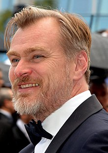

Christopher Edward Nolan - is an English film director, screenwriter, and producer who holds both British and American citizenship.
He is one of the highest-grossing directors in history, and among the most acclaimed and influential filmmakers of the 21st century.
Having made his directorial debut with Following (1998), Nolan gained considerable attention for his second feature Memento (2000), for which he was nominated for numerous accolades, including the Academy Award for Best Original Screenplay.
The acclaim garnered by his independent films gave Nolan the opportunity to make the big-budget thriller Insomnia (2002) and the mystery drama The Prestige (2006). He found further popular and critical success with The Dark Knight Trilogy (2005–2012); Inception (2010), which received eight Academy Award nominations, including for Best Picture and Best Original Screenplay; Interstellar (2014); and Dunkirk (2017), which earned him his first Academy Award nomination for Best Director.
His ten films have grossed over US$4.7 billion worldwide and garnered a total of 34 Oscar nominations and ten wins.
Nolan has co-written several of his films with his brother Jonathan, and runs the production company Syncopy Inc. with his wife Emma Thomas.
Nolan's films are typically rooted in epistemological and metaphysical themes, exploring human morality, the construction of time, and the malleable nature of memory and personal identity.
His body of work is permeated by materialistic perspectives, nonlinear storytelling, practical special effects, innovative soundscapes, large-format film photography, and analogous relationships between visual language and narrative elements. In addition to his filmmaking, he is an advocate for film preservation and the continued availability of film stock.Nolan was born in London, England. His English father, Brendan James Nolan, was an advertising executive, and his American mother, Christina , worked as a flight attendant and an English teacher. His childhood was split between London and Evanston, Illinois, and he has both British and US citizenship. He has an older brother, Matthew Francis Nolan, a convicted criminal, and a younger brother, Jonathan. He began making films at age seven, borrowing his father's Super 8 camera and shooting short films with his action figures.Growing up, Nolan was particularly influenced by 2001: A Space Odyssey (1968) and Star Wars (1977). Around the age of eight, he made a stop motion animation homage to the latter called Space Wars. His uncle, who worked at NASA building guidance systems for the Apollo rockets, sent him some launch footage: "I re-filmed them off the screen and cut them in, thinking no-one would notice," Nolan later remarked. From the age of eleven, he aspired to be a professional filmmaker.Personal life
Nolan and his wife Emma Thomas in January 2011
Nolan is married to Emma Thomas, whom he met at University College London when he was 19. She has worked as a producer on all of his films, and together they founded the production company Syncopy Inc. The couple have four children and reside in Los Angeles. Protective of his privacy, he rarely discusses his personal life in interviews.However, he has publicly shared some of his sociopolitical concerns for the future, such as the current conditions of nuclear weapons and environmental issues that he says need to be addressed. He has also expressed an admiration for scientific objectivity, wishing it were applied "in every aspect of our civilization."
Nolan prefers not to use a mobile phone or an email address,[280] saying, "It's not that I'm a Luddite and don't like technology; I've just never been interested [...] When I moved to Los Angeles in 1997, nobody really had cell phones, and I just never went down that path." He also prohibits use of phones on set.